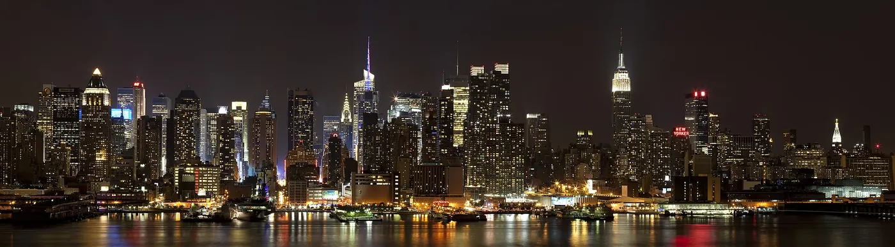
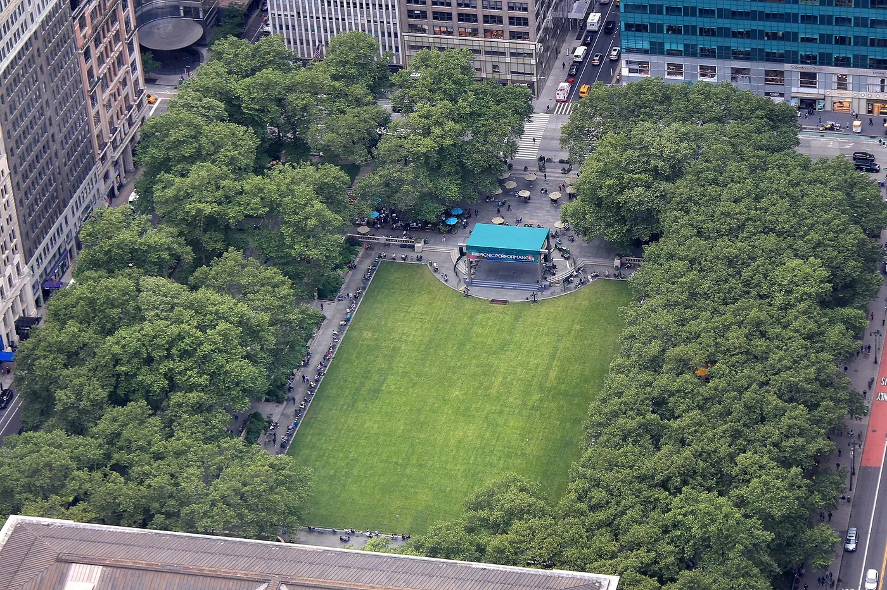

Top of the Rock
The deck that frames the Empire State Building. Three levels above Rockefeller Center, a lift that takes seconds, and the view most photographs of New York are actually taken from.
Checked 2 November 2026. Prices, opening hours and transport details were verified against official sources. Things change — confirm before you book. How we check.

Built to look at the building next door
Rockefeller Center put its observation deck on the wrong side of Midtown on purpose. From the 70th floor the Empire State Building stands directly to the south, lit at dusk, and everything else arranges itself around it.
You move through three levels: 67, 69 and 70. The route is one-way in spirit — go up first, then work down — and each level gives you a slightly different angle on the same skyline. The upper deck is the one people photograph from, and it is the one that fills up first.
The rest of the view is Midtown at close range: the towers of the Rockefeller Center complex below you, the green rectangle of Central Park running north, and both rivers at the edges. It is a better view of the city than a taller deck gives, because the city is closer.
Why this deck is the photographer's choice
If one image is coming home with you, this is the deck that takes it.
The Empire State in the frame
No other observation deck includes the Empire State Building in its skyline. From the south side it is close enough to fill a phone frame, close enough that you can see the terrace you would be standing on instead.
Three levels, three angles
Floors 67, 69 and 70 are stacked rather than repeated. The lower levels put you level with Midtown's rooftops; the top one clears them, which is why the route rewards walking up before you walk down.
Central Park on axis
Look north and the park runs away from you in a straight green line, framed by the buildings of Fifth Avenue and Central Park West. It is the clearest view of the park's scale anywhere in the city.
Tickets, add-ons and getting up there
This is a timed ticket with two paid extras. Sort all three before you arrive.
- Book timed admission on the Rockefeller Center site. Prices from $42 rise for peak dates and sunset slots, and the calendar shows the real price.
- Decide on The Beam and SKYLIFT at the same time. Both are paid add-ons and both sell out; buying at the roof is not reliable.
- Enter through the Rockefeller Center concourse at 50th Street rather than queueing at street level.
- Expect a bag scan and no large luggage. The lift is fast, but security is the slow part at peak times.
- Go at 08:00 or after 22:00 if you want space. Sunset is the crush, and it is worth booking days ahead if that is the light you want.
Top of the Rock — official tickets
Rockefeller Center sells timed admission, The Beam, SKYLIFT and combination tickets on its own site. The price changes with the date and time, so the checkout calendar is the only reliable figure.
Book at Rockefeller CenterOfficial seller. We take no commission on this link.
What most visitors get wrong
-
01
Buy the add-ons with the ticket
The Beam and SKYLIFT are separate products, not included in admission. They are the first things to sell out on a clear weekend, and the roof cannot always sell you one.
-
02
Arrive before sunset, not at it
The light is best in the 40 minutes before the sun drops, but that is also when the top deck is fullest. Book an earlier slot and stay up; the deck does not rush you out.
-
03
Walk up before you walk down
The top level is where the view opens out. If you stop on 67 first you will queue twice for the lift. Take the lift to the top, then explore on the way down.
-
04
Leave big bags at the hotel
Security scans bags and will not accept large luggage. The concourse entrance is easier than the street-level doors, especially in winter.
Nearby and worth your time

Empire State Building
The open-air terrace on 86, and the view that does not include itself. The natural pair for this one.

SUMMIT One Vanderbilt
Half art installation, half skyline. The most photogenic interior in Midtown, five minutes' walk east.

All New York attractions
Prices, booking order and the free alternatives, all in one place.
Top of the Rock questions
Top of the Rock or the Empire State Building — which is better?
They answer different questions. Top of the Rock gives you the Empire State Building in the frame; the Empire State gives you everything except itself. If you want the classic photograph, come here.
Are The Beam and SKYLIFT worth paying for?
They are separate products from the observation deck and both sell out on busy days. Decide before you arrive and buy them with your ticket rather than on the roof, where availability is whoever queued first.
How long does a visit take?
Plan 1.5–2 hours for the three levels (67, 69 and 70), including security and the lifts. At sunset, add time for the queue at the top.
What is the quietest time to go?
The 08:00 opening and the last hour before closing are calmest. Sunset is the busiest slot of the day at every deck in the city, and this one is no exception.
Should I buy from the official site?
Yes. Timed admission, The Beam and SKYLIFT are sold by Rockefeller Center. Resale sites add fees and cannot guarantee the slot you paid for.